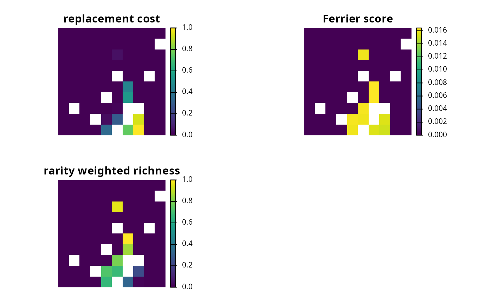
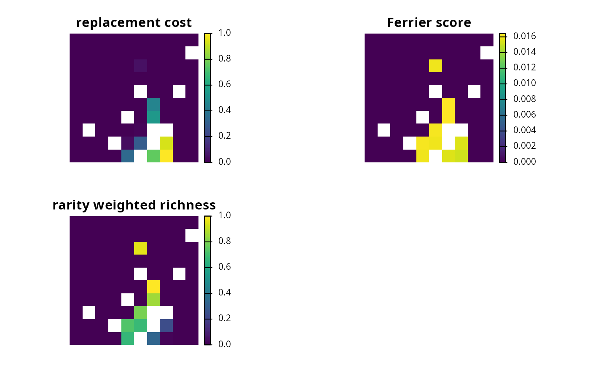

Importance scores (also known as irreplaceability scores) can be used to assess the relative importance of planning units selected in a solution to a conservation planning problem.
Details
The following methods are available for calculating importance scores
for a solution to a conservation planning problem():
eval_replacement_importance()Calculate importance scores using replacement costs (based on Cabeza and Moilanen 2006). These scores quantify the change in the objective function (e.g., additional costs required to meet feature targets) of the optimal solution if a given planning unit in a solution cannot be acquired. They can (i) account for the cost of different planning units, (ii) account for multiple management zones, (iii) apply to any objective function, and (iv) identify truly irreplaceable planning units (denoted with infinite values).
eval_rank_importance()Calculate importance scores using ranks (based on Jung et al. 2021). These scores measure importance using an incremental optimization approach. They can (i) account for the cost of different planning units, (ii) account for multiple management zones, and (iii) apply to solutions generated with any objective function.
eval_ferrier_importance()Calculate importance scores following Ferrier et al. (2000). These scores measure importance based on how critical planning units are for meeting targets. They can only be applied to conservation problems that use targets and a single zone (e.g., the classic Marxan-type problem). Furthermore – unlike the replacement cost scores – these scores provide a score for each feature within each planning unit, providing insight into why certain planning units are more important than other planning units.
eval_rare_richness_importance()Calculate importance scores using the rarity weighted richness metric (based on Williams et al. 1996). These score are simply a measure of biodiversity. They do not account for planning costs, multiple management zones, objective functions, or feature targets (or weightings). They merely describe the spatial patterns of biodiversity, and do not account for many of the factors needed to quantify the importance of a planning unit for achieving conservation goals.
Broadly speaking, we recommend using replacement cost scores where
possible. This is because they can be applied to any type of conservation
planning problem – regardless of the objective function or number of
zones considered in the problem – and measure planning unit importance based
on degradation of the prioritization.
Although the replacement cost scores can be calculated for small and
moderate sized problems (e.g., less than 30,000 planning units), they may not
be feasible for particularly large problems (e.g., more than 100,000 planning
units). In such cases, we recommend calculating importance scores using the
rank method. This is because it can be calculated relatively quickly for
large-sized problems and can explicitly account for costs and representation
targets (depending on the objective function used). If using the
the rank method with a solution generated using the minimum set objective
(i.e., add_min_set_objective()), we recommend using the minimum shortfall
objective. The Ferrier method can also
be useful to highly identify irreplaceable planning units.
We only recommend using the rarity weighted richness metric
when neither of the other two methods can be used.
References
Cabeza M and Moilanen A (2006) Replacement cost: A practical measure of site value for cost-effective reserve planning. Biological Conservation, 132: 336–342.
Ferrier S, Pressey RL, and Barrett TW (2000) A new predictor of the irreplaceability of areas for achieving a conservation goal, its application to real-world planning, and a research agenda for further refinement. Biological Conservation, 93: 303–325.
Jung M, Arnell A, de Lamo X, García-Rangel S, Lewis M, Mark J, Merow C, Miles L, Ondo I, Pironon S, Ravilious C, Rivers M, Schepaschenko D, Tallowin O, van Soesbergen A, Govaerts R, Boyle BL, Enquist BJ, Feng X, Gallagher R, Maitner B, Meiri S, Mulligan M, Ofer G, Roll U, Hanson JO, Jetz W, Di Marco M, McGowan J, Rinnan DS, Sachs JD, Lesiv M, Adams VM, Andrew SC, Burger JR, Hannah L, Marquet PA, McCarthy JK, Morueta-Holme N, Newman EA, Park DS, Roehrdanz PR, Svenning J-C, Violle C, Wieringa JJ, Wynne G, Fritz S, Strassburg BBN, Obersteiner M, Kapos V, Burgess N, Schmidt- Traub G, Visconti P (2021) Areas of global importance for conserving terrestrial biodiversity, carbon and water. Nature Ecology and Evolution, 5: 1499–1509.
Williams P, Gibbons D, Margules C, Rebelo A, Humphries C, and Pressey RL (1996) A comparison of richness hotspots, rarity hotspots and complementary areas for conserving diversity using British birds. Conservation Biology, 10: 155–174.
See also
Other overviews:
constraints,
decisions,
objectives,
penalties,
portfolios,
solvers,
summaries,
targets
Examples
# \dontrun{
# load data
sim_pu_raster <- get_sim_pu_raster()
sim_features <- get_sim_features()
# build minimal conservation problem with raster data
p1 <-
problem(sim_pu_raster, sim_features) %>%
add_min_set_objective() %>%
add_relative_targets(0.1) %>%
add_binary_decisions() %>%
add_default_solver(gap = 0, verbose = FALSE)
# solve the problem
s1 <- solve(p1)
# plot solution
plot(s1, main = "solution", axes = FALSE)
 # calculate importance scores using replacement cost scores
ir1 <- eval_replacement_importance(p1, s1)
# calculate importance scores using Ferrier et al 2000 method,
# and extract the total importance scores
ir2 <- eval_ferrier_importance(p1, s1)[["total"]]
# calculate importance scores using rarity weighted richness scores
ir3 <- eval_rare_richness_importance(p1, s1)
# create multi-band raster with different importance scores
ir <- c(ir1, ir2, ir3)
names(ir) <- c(
"replacement cost", "Ferrier score", "rarity weighted richness"
)
# plot importance scores
plot(ir, axes = FALSE)

# }
# calculate importance scores using replacement cost scores
ir1 <- eval_replacement_importance(p1, s1)
# calculate importance scores using Ferrier et al 2000 method,
# and extract the total importance scores
ir2 <- eval_ferrier_importance(p1, s1)[["total"]]
# calculate importance scores using rarity weighted richness scores
ir3 <- eval_rare_richness_importance(p1, s1)
# create multi-band raster with different importance scores
ir <- c(ir1, ir2, ir3)
names(ir) <- c(
"replacement cost", "Ferrier score", "rarity weighted richness"
)
# plot importance scores
plot(ir, axes = FALSE)

# }